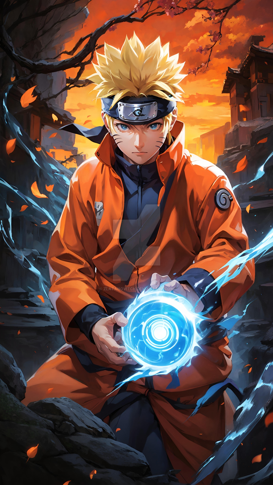
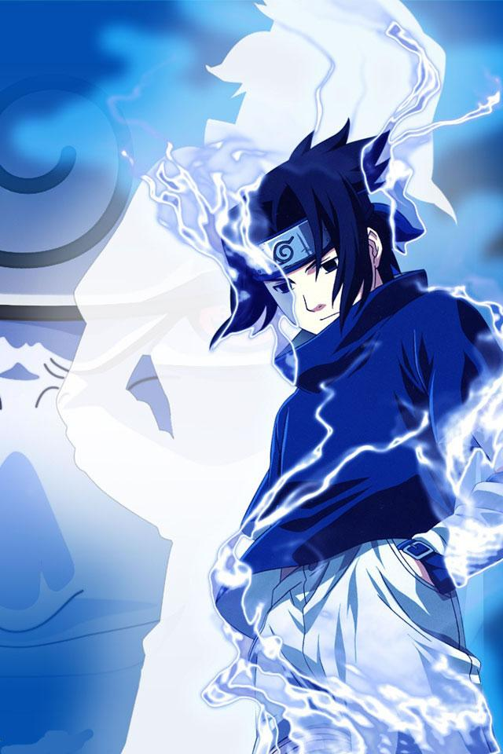
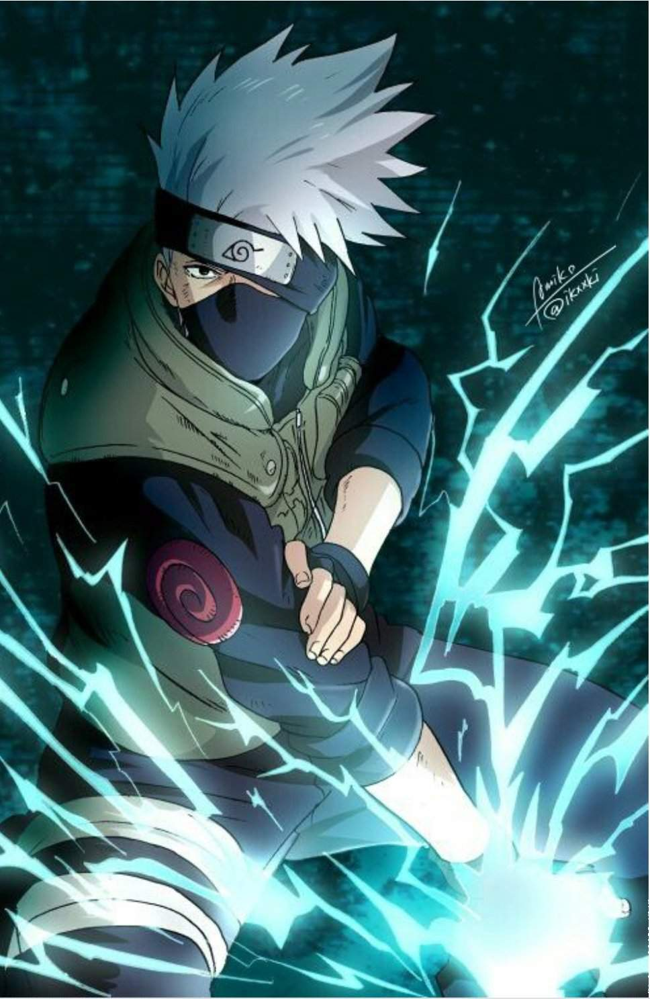

Key Characters
Naruto Uzumaki

Naruto Uzumaki is the series' main protagonist. He is a spirited and determined young ninja with a dream of becoming the Hokage, the leader of his village, to gain recognition and protect those he cares about. Despite facing many challenges, Naruto’s unwavering resolve drives his journey.
Sasuke Uchiha

Sasuke Uchiha is Naruto’s friend and rival. He possesses exceptional talent and a troubled past. Driven by a desire for revenge against his older brother, Itachi, who killed their clan, Sasuke's journey is one of redemption and self-discovery.
Sakura Haruno

Sakura Haruno is a key member of Team 7 alongside Naruto and Sasuke. Known for her initially unrequited love for Sasuke, Sakura evolves into a powerful ninja with extraordinary medical skills and immense strength.
Kakashi Hatake

Kakashi Hatake is the leader of Team 7 and a highly skilled ninja. He is recognized for his Sharingan eye and laid-back personality. Kakashi plays a crucial role in mentoring Naruto, Sasuke, and Sakura through their missions and growth.